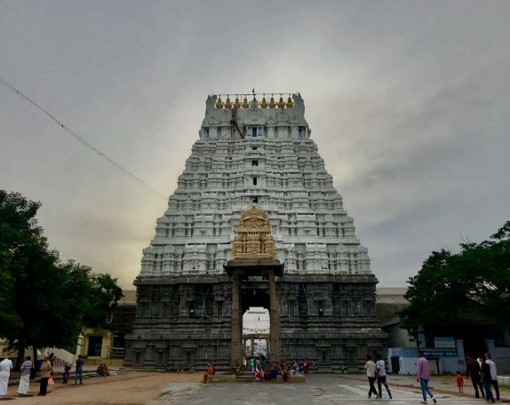

The Varadharaja Perumal Temple in Kanchipuram, Tamil Nadu, is a revered Hindu temple dedicated to Lord Vishnu. It stands as one of the 108 Divya Desams, the sacred abodes of Vishnu, and is renowned for its historical significance, architectural grandeur, and spiritual importance. The temple boasts a rich history with over 350 inscriptions from various dynasties, including the Cholas, Pandyas, Hoysalas, and Vijayanagara rulers. Originally renovated by the Cholas in 1053 CE, it underwent significant expansions during the reigns of Kulottunga Chola I and Vikrama Chola. Notably, during a Mughal invasion in 1688, the main deity was temporarily relocated to Udayarpalayam for safekeeping and was ceremoniously returned in 1710.